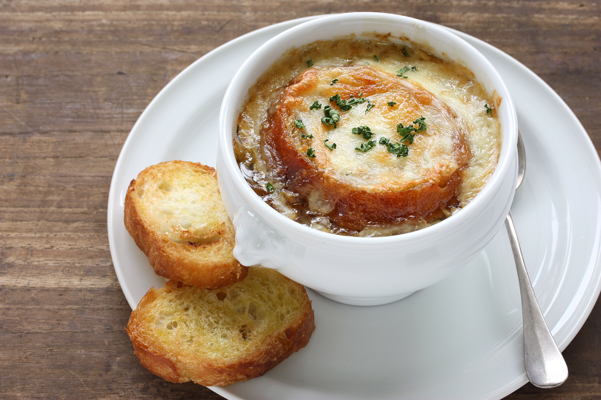

French Onion Soup Recipe

Description
French onion soup is a type of soup usually based on meat stock and onions, and often served gratinéed with croutons or a larger piece of bread covered with cheese floating on top (Wikipedia). Try this easy and tasty recipe from Simply Recipes
Ingredients
- 6 large onions, thinly sliced
- 2 cloves garlic
- 3 tbsp butter
- 1 tsp sugar
- 8 cups beef stock
- 2 bay leaves
- 1 tsp dried thyme
- 8 slices French baguette
- 200g grated Gruyere cheese
- salt and pepper to taste